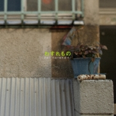
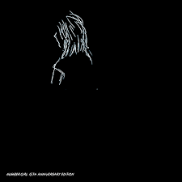
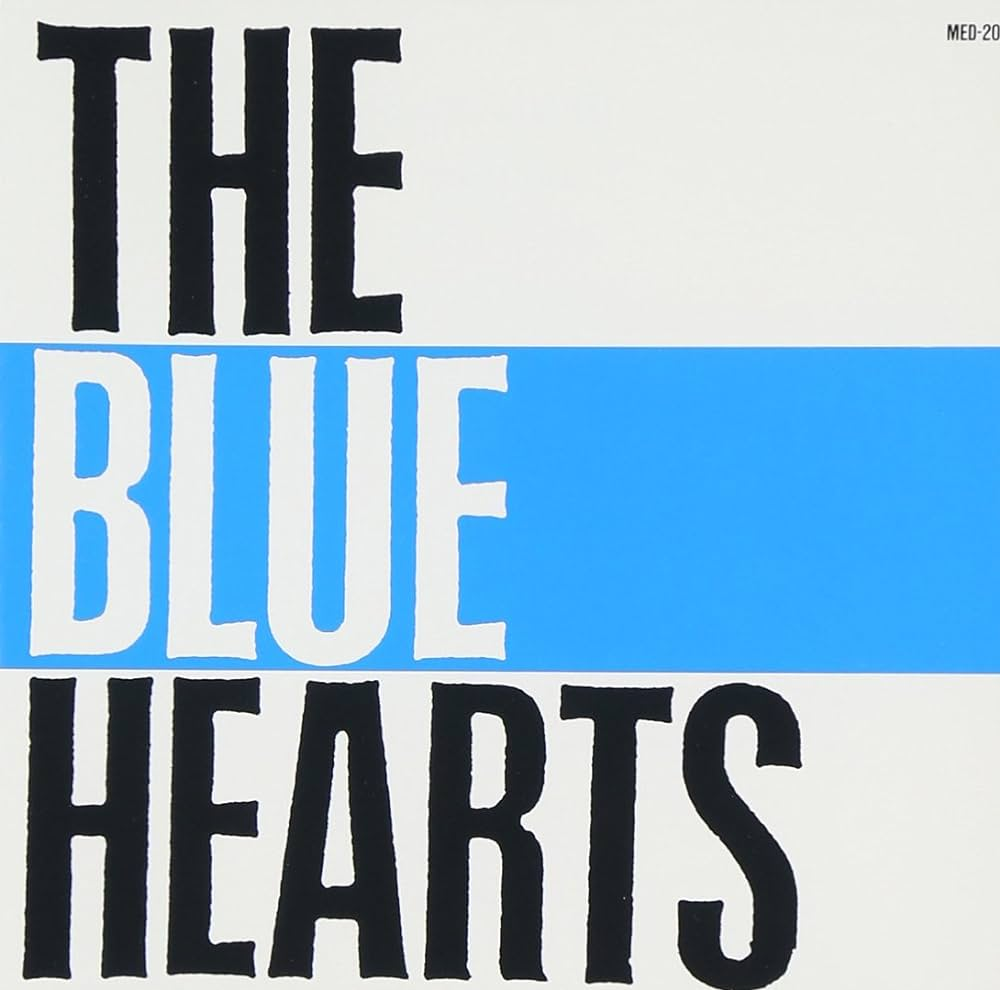
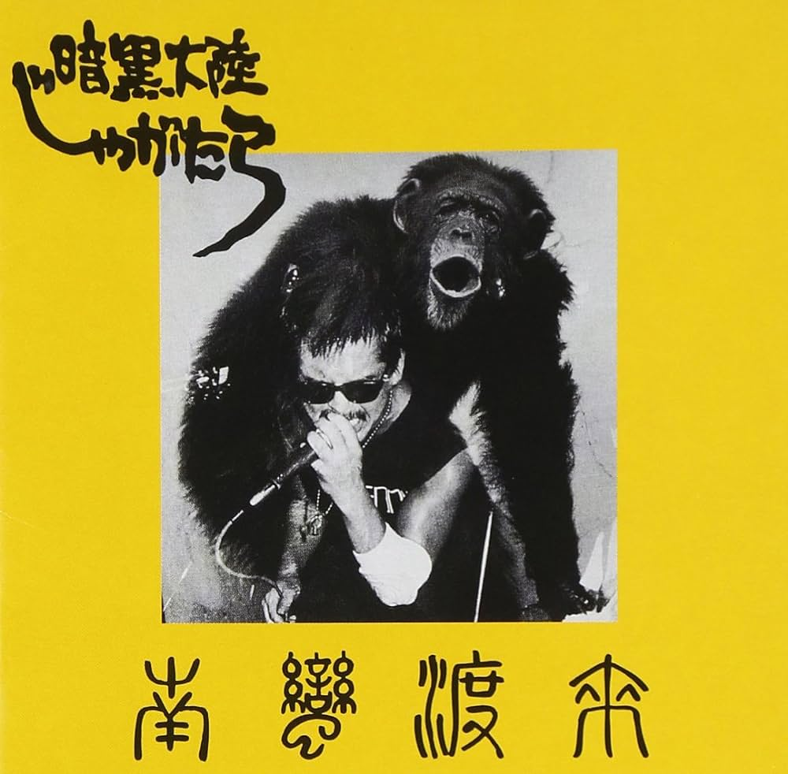

好きな邦楽アルバムを考えたい
修士も無事取れてジャーナルもちゃんと提出できて，本格的に仕事が始まる四月まで時間があるので(2週間)，今までやってみたかった好きな邦楽アルバムをまとめるやつ，を，やる🍟．
せっかくなので名盤ランキングではなく好きなアルバムという視点でまとめる．
例えば名盤という視点ならジャックスの「ジャックスの世界」は間違いなく入ると思うけど正直このサイケっぽい GS はそこまで好きではないので除外する，みたいな感じ
ジャンル混合の異種格闘ではあるけどボカロだけはそれだけでリストが作れるので除外する．
1. King Gnu / CEREMONY

king gnu 自体あまり興味なかったけどいざ聴いてみるとやっぱ良い
というか常田がアクモンとかレディへが好きらしいのでやっぱり聴かず嫌いせずに聴くべきだったんだろうな
シングルとか EP みたいな小さいサイズの仕事をリリースするアーティストが多い中で物語性のあるアルバムを出せるのは king gnu の人気と実力が相まったものだと思う
2. GEZAN / 狂(KLUE)
キワモノ感があって極端に尖ったオリエンタルな曲が多いから冷たい雰囲気を感じたけど，聴いてみると意外と人間味があって優しいメッセージの曲が多い
「東京」がピックアップされることが多いけど，「東京」の良さは「東京」以前の「EXTACY」とか「AGEHA」みたいなストイックな曲から「Soul Material」からだんだんと優しさが見えてきたあたりで刺さってくるものだと思うので，ぜひアルバムで聴いてほしいと思っている
関係ないけど apple music でワールドミュージックに分類されてて笑った．分からなくもない
3. cero / Obscure Ride
日本人がブラックミュージックを作ろうとするときはどうしても黒人への憧れみたいなものが全面的に出てしまって，ビジュアルばかりに注目してしまったりとか（ドレッドヘアーみたいなもの．黒人文化への配慮が欠けてるみたいな批判もあるけど立派なアプローチの一つだと思う．），日本ぽさもファンクっぽさも失ってしまったりすることが多々あると思うが， cero の Obscure Ride はあくまでブラックミュージックの模倣であることを認めつつ，都会的な日本人ぽさを失わずにファンクを作れていると思った．小沢健二とかが出たときもこんな感じだったのかな，少し違うか
4. andymori / andymori
曲風以上に歌詞が文学的だなと思うことが多い．
文学的というか「実は何も考えてないのか？」みたいに思うくらい抽象的な歌詞に出会うこともある．Smells Like Teen Spirit みたいにガレージの激しさと感覚的な歌詞をやりたかったのかなと思うこともある．
「僕が白人だったら」がめちゃいい．欧米コンプレックスはアジア人が書くと一気に切実になると思う．
ちなみに「和製リバティーンズ」にはあまり納得していない
5. ZAZEN BOYS / らんど
新譜だからか？
ナンバガのときもそうだったけどこのギターの遠さは他のバンドにない感じがして良い．今更悪い機材を使ってカウンターすることもないだろうからそういう EQ をかけてるのかな？
ライブに行きたい
6. MONO NO AWARE / かけがえのないもの
4~5 年前くらいにアルバイトの通勤でずっと聴いてた記憶がある．
「言葉になかったら」は冗談抜きで邦楽全体の中でも上位に入るクオリティだと思う．ロックとかシティポップに簡単に寄り添わない曲調が良く刺さる．
コンセプトアルバムが減っているなかで長編を書いてくれるのは嬉しい
7. 柴田聡子 / Your favorite things
新譜だからか？2
かなり色んなことをやろうとしているけどゴチャゴチャになっていない上に，しっかり聴かなくても楽しいというポップスとしても完成されているアルバムだと思う．
8. KANDY TOWN / KANDYTOWN
日本語ヒップホップは本当に聴かないんだが KANDYTOWN はすごく刺さった．ラップの歌詞って「こんなワルをしたゼ」とか「アイツの曲はカスだゼ」みたいな海外ヒップホップの完全下位互換みたいなものしかないと思っていたけど，KANDYTOWN は良い意味で理性的というか日本人の方向性とうまく噛み合っていると思った． IO がマジでかっこよすぎる
9. sweet william × jinmenusagi / la blanka
sweet william のトラックが良すぎる．エモいとはこのこと．．．
jinmenusagi は知り合いに 「so goo」を教えてもらってからよく聴く．
ラップバトルも jinmenusagi か DOTAMA が出てれば見るくらい好き．
聴き手に寄り添ってくる歌詞というか対等で話してくれてるような歌詞が良い
10. ゆらゆら帝国 / SWEET SPOT
「空洞です」が傑作に上げられることが多いけど正直あまり咀嚼できてない．
「SWEET SPOT」はまだゆらゆら帝国のサイケな感じが前面に出ていて聴きやすい．
「タコ人間」みたいなわけ分かんない音色でわけ分かんない歌詞を歌うの坂本慎太郎しかできないだろうなと思って聴いてる．「ソフトに死んでいる」とか最初ビックリした
11. 銀杏BOYS / 君と僕の第三次世界大戦的恋愛革命
12. レイハラカミ / わすれもの

13. NUMBER GIRL / SAPPUKEI

14. BUMP PF CHICKEN / Jupyter

15. 椎名林檎 / 無罪モラトリアム
16. Hi-STANDARD / MAKING THE ROAD
17. THEE MICHELLE GUN ELEPHANT / Chicken Zombies
18. Cornelius / Fantasma
19. 小沢健二 / LIFE
20. INU / メシ喰うな
21. スピッツ / 名前をつけてやる
22. エレファントカシマシ / ココロに花を
23. THE BLUE HEARTS / THE BLUE HEARTS

24. ローザ・ルクセンブルグ / ROSA LUXEMBURG II
25. BOOWY / BEAT EMOTION
26. THE STALIN / STOP JAP
27. 暗黒大陸じゃがたら / 南蛮渡来

28. アナーキー / アナーキー

29. 佐野元春 / SOMEDAY

30. RCサクセション / BLUE

31. サザンオールスターズ / KAMAKURA

32. 喜納昌吉 & チャンプルーズ / 喜納昌吉 & チャンプルーズ

33. シュガーベイブ / SONGS

34. 大瀧詠一 / NIAGARA MOON

35. 大瀧詠一 / EACH TIME

36. 鈴木茂 / BAND WAGON

37. 四人囃子 / 一触即発

38. サディスティックミカバンド / 黒船

39. 村八分 / ライブ

40. FLOWER TRAVELLIN’ BAND / SATORI

41. はっぴいえんど / 風街ろまん

42. ゴダイゴ / GODAIGO GREAT BEST

43. 岡林信康 / 私を断罪せよ

44. Char / Char

45. 細野晴臣 / HOSONO HOUSE

46. YMO / テクノデリック

47. 葡萄畑 / 葡萄畑

48. 小坂忠 / ほうろう

49. ティンパンアレー

50. 高橋幸宏 / WHAT, ME WORRY ?

51. 坂本龍一 / B-2 Unit

52. ART-SHCOOL / In colors

53. Flipper’s guitar / camera talk

54. 頭脳警察 / 頭脳警察3

55. 荒井由美 / ひこうき雲

56. 井上陽水 / 氷の世界

57. スーパーカー / HiGHvision

58. 電気グルーヴ / カラテカ

59. TOWA TEI / future listening

60. KIRINJI / 3

61. 五つの赤い風船 / 血まみれの鳩

62. ヒカシュー / 夏

63. group_inou / MAP

64. パソコン音楽クラブ / Night Flow

65. 吉田美奈子 / FLAPPER

66. 大貫妙子 / SUNSHOWER

67. After the Rain / クロクレストストーリー

68. betcover!! / 馬

69. Kroi / telegraph

70. NICO NICO TAN TAN / 微笑

71. w.o.d. / 感情

72. ヨルシカ / 夏草が邪魔をする

73. 新東京 / NEO TOKYO METRO

74. ひとひら / つくる

75. 離婚伝説 / 離婚伝説

76. えんぷてい / TIME

77. 中村一義 / 金字塔

78. サカナクション / sakanaction

79. D.A.N. / D.A.N.

80. 帰りの会 / OTOTOY